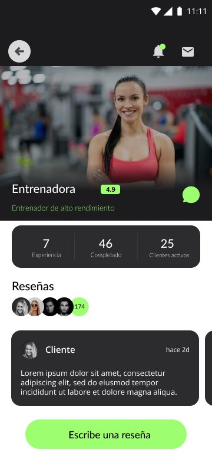
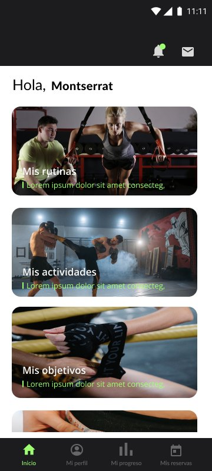
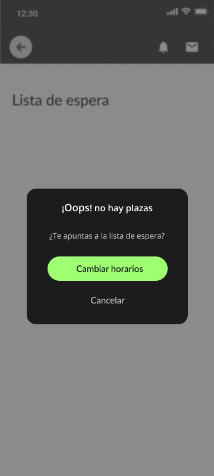
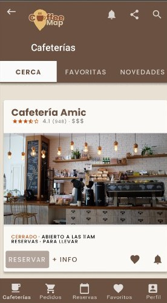
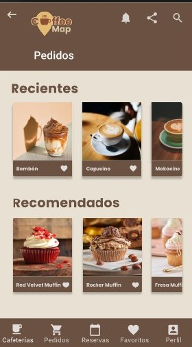
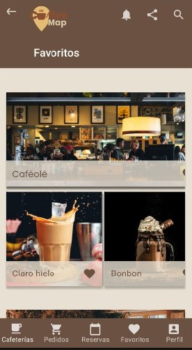
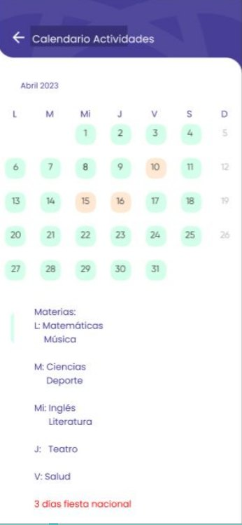
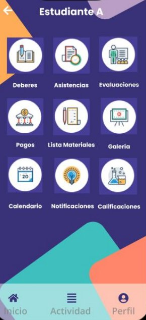
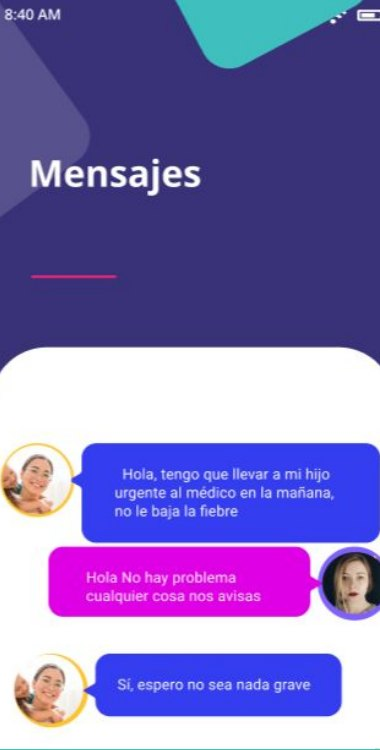

- 1
- 2
- 3
- 4



20% →



7/10



96%
EscolApp
Women Techmakers BCN
GDG Barcelona
SheHub
Liquid Galaxy · Google Summer of Code
Dona Tech Labs
- Product UX/UI Lead | Product OwnerKeluo Tech Consulting · 2023–2024
- International Operations & Systems Optimization Lead
- Business Systems Analyst · ERP & Procurement (SAP MM/SD)Givaudan · 2008–2010
- Product ManagerCoderhouse · 2022
- UX/UI Design AdvancedCoderhouse · 2021–2022
- ESCI-UPF · 2010–2011
- Universitat Pompeu Fabra · 2007–2008
- Product Owner – Scrum Master
- UX DesignGoogle · Coursera
- UX/UI
- AI for Designers
Figma
SAP